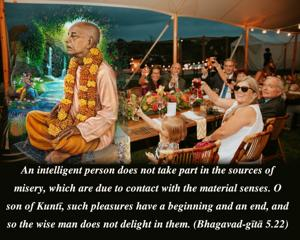
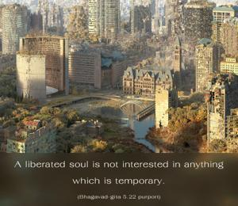
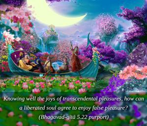
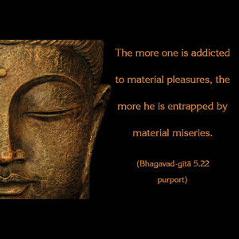

An intelligent person does not take part in the sources of misery, which are due to contact with the material senses. O son of Kuntī, such pleasures have a beginning and an end, and so the wise man does not delight in them.




Material sense pleasures are due to the contact of the material senses, which are all temporary because the body itself is temporary. A liberated soul is not interested in anything which is temporary. Knowing well the joys of transcendental pleasures, how can a liberated soul agree to enjoy false pleasure? In the Padma Purāṇa it is said:
ramante yogino ’nante
satyānande cid-ātmani
iti rāma-padenāsau
paraṁ brahmābhidhīyate
“The mystics derive unlimited transcendental pleasures from the Absolute Truth, and therefore the Supreme Absolute Truth, the Personality of Godhead, is also known as Rāma.”
In the Śrīmad-Bhāgavatam also (5.5.1) it is said:
nāyaṁ deho deha-bhājāṁ nṛ-loke
kaṣṭān kāmān arhate viḍ-bhujāṁ ye
tapo divyaṁ putrakā yena sattvaṁ
śuddhyed yasmād brahma-saukhyaṁ tv anantam
“My dear sons, there is no reason to labor very hard for sense pleasure while in this human form of life; such pleasures are available to the stool-eaters [hogs]. Rather, you should undergo penances in this life by which your existence will be purified, and as a result you will be able to enjoy unlimited transcendental bliss.”
Therefore, those who are true yogīs or learned transcendentalists are not attracted by sense pleasures, which are the causes of continuous material existence. The more one is addicted to material pleasures, the more he is entrapped by material miseries.